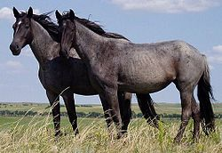

Information taken from Wikipedia.
How does the horse look?
The horse (Equus ferus caballus)[2][3] is one of two extant subspecies of Equus ferus. It is an odd-toed ungulate mammal belonging to the taxonomic family Equidae. The horse has evolved over the past 45 to 55 million years from a small multi-toed creature into the large, single-toed animal of today. Humans began to domesticate horses around 4000 BC, and their domestication is believed to have been widespread by 3000 BC. Horses in the subspecies caballus are domesticated, although some domesticated populations live in the wild as feral horses. These feral populations are not true wild horses, as this term is used to describe horses that have never been domesticated, such as the endangered Przewalski's horse, a separate subspecies, and the only remaining true wild horse. There is an extensive, specialized vocabulary used to describe equine-related concepts, covering everything from anatomy to life stages, size, colors, markings, breeds, locomotion, and behavior.
Horses' anatomy enables them to make use of speed to escape predators and they have a well-developed sense of balance and a strong fight-or-flight response. Related to this need to flee from predators in the wild is an unusual trait: horses are able to sleep both standing up and lying down. Female horses, called mares, carry their young for approximately 11 months, and a young horse, called a foal, can stand and run shortly following birth. Most domesticated horses begin training under saddle or in harness between the ages of two and four. They reach full adult development by age five, and have an average lifespan of between 25 and 30 years.
Jump to the top.